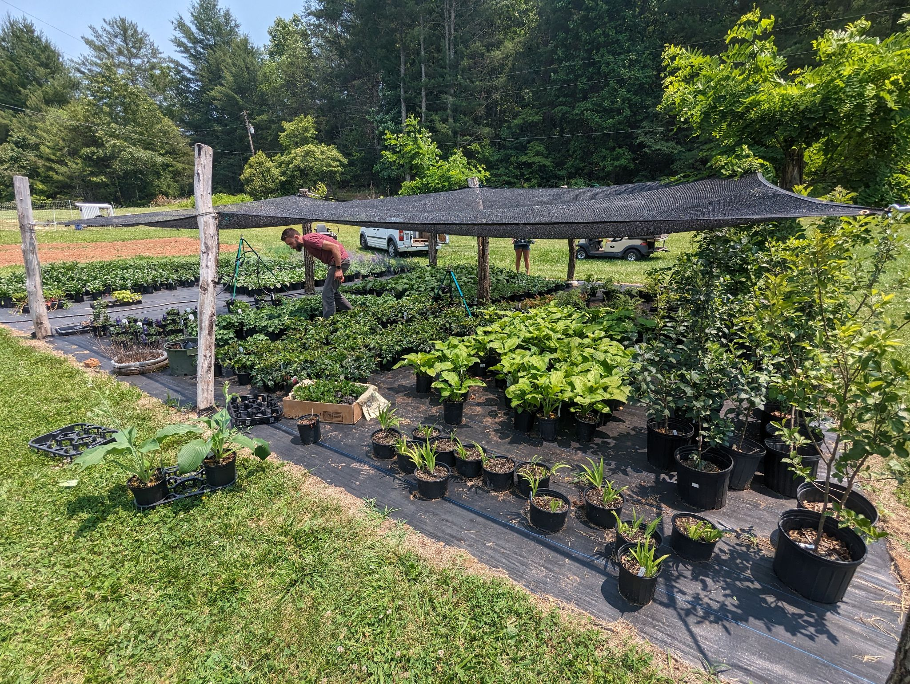
Landscape Perennials
Landscaping perennials — ground cover, flowering, and animal-resistant varieties, available seasonally.
Available Seasonally
Ground cover, flowering, and animal-resistant varieties selected to hold up to Western North Carolina’s slopes, shade, and deer pressure.
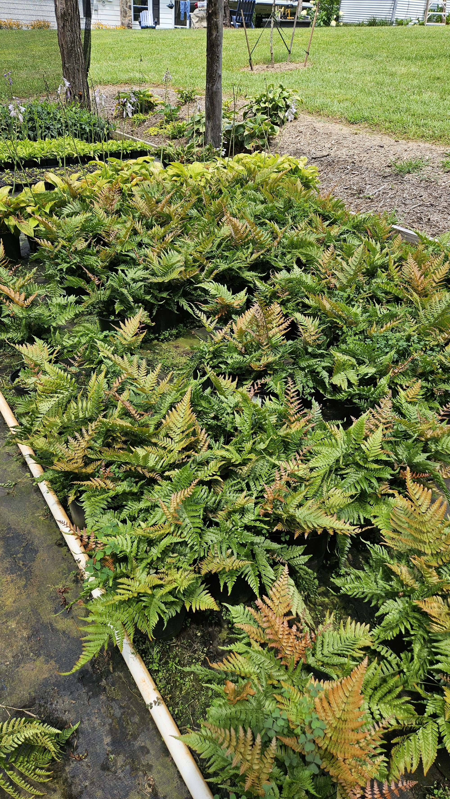
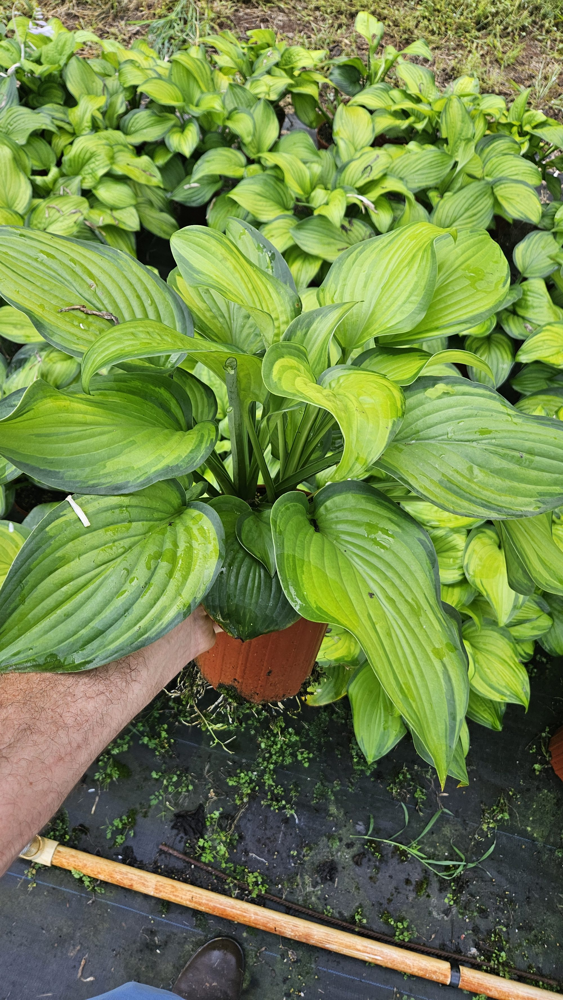
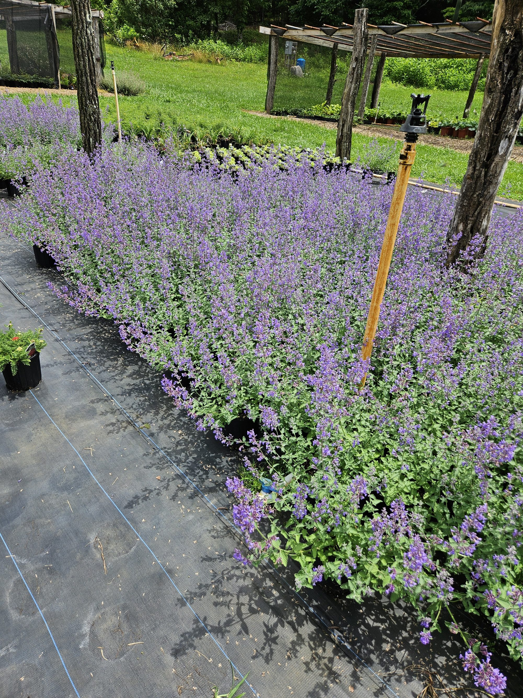
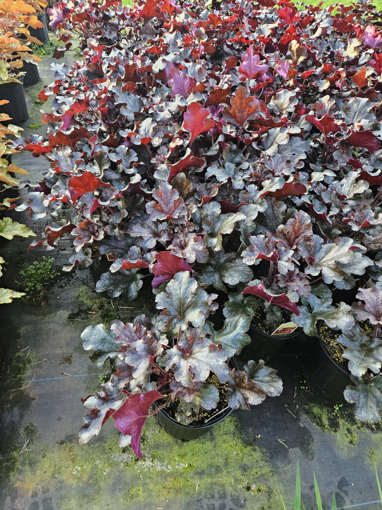
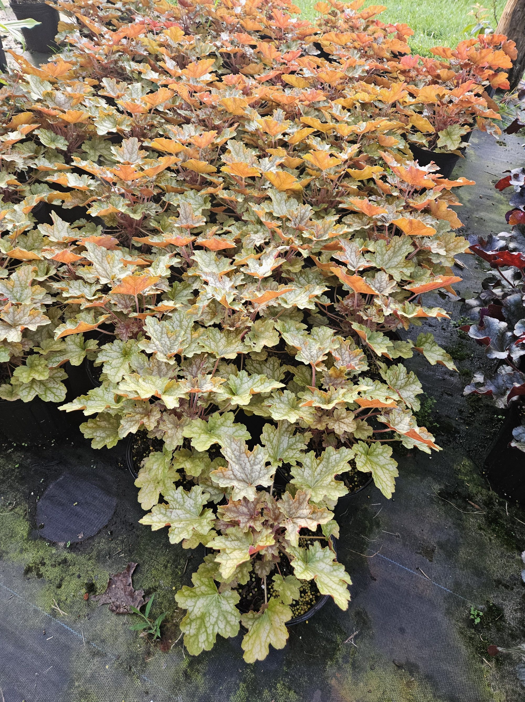
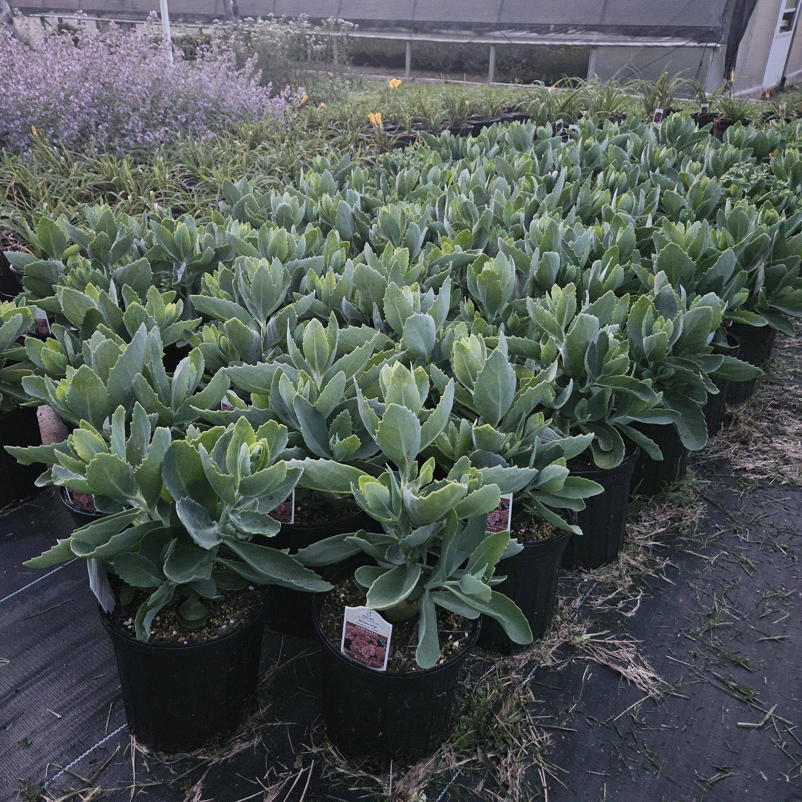
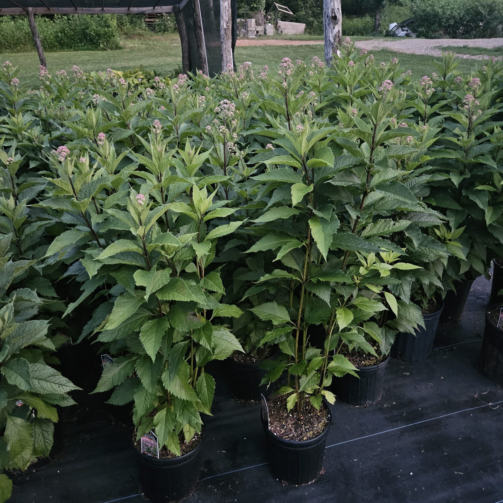
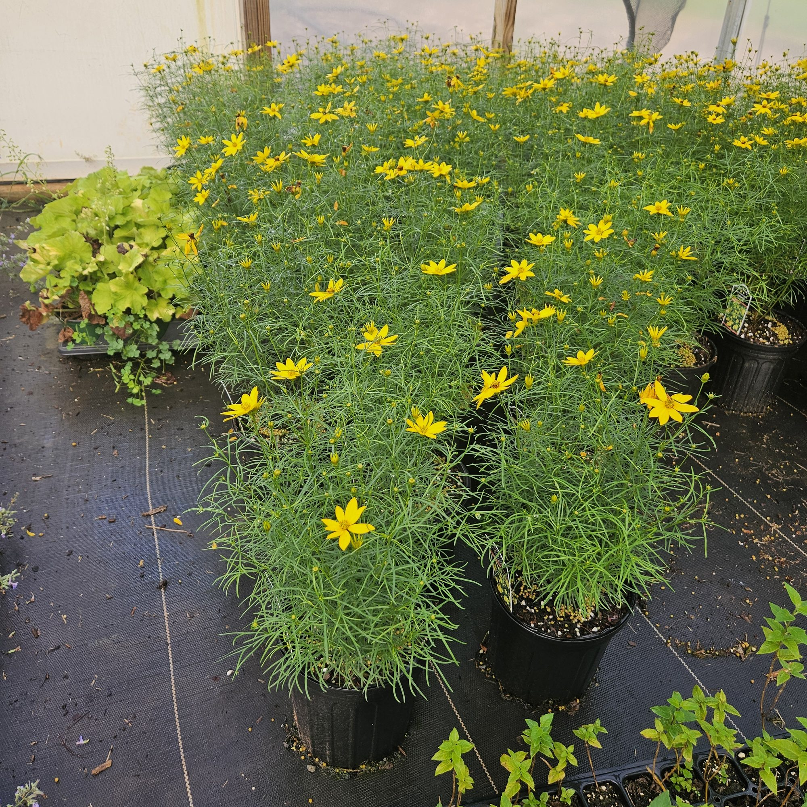
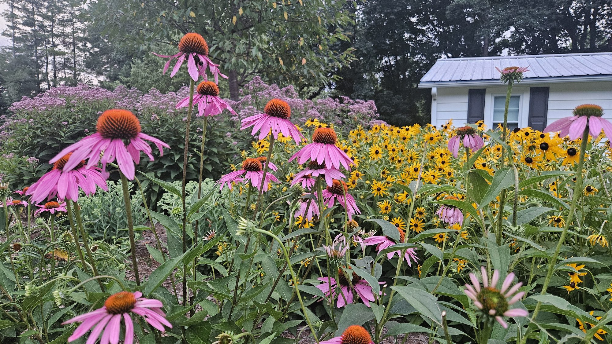
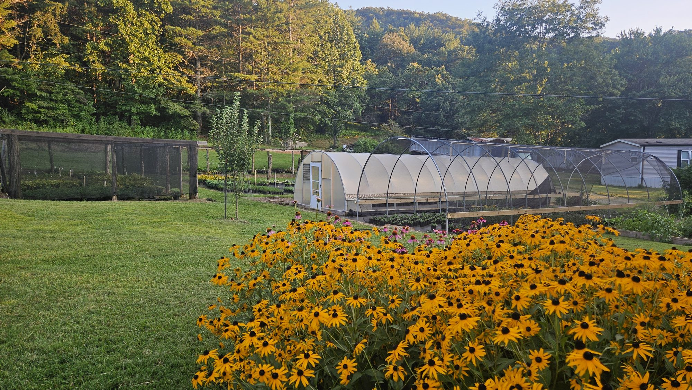
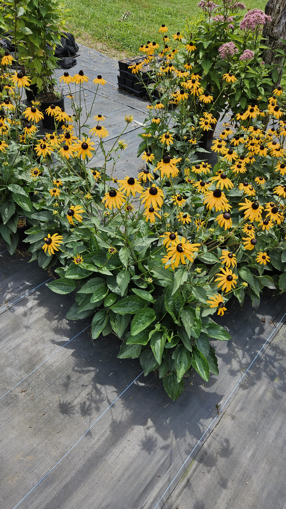
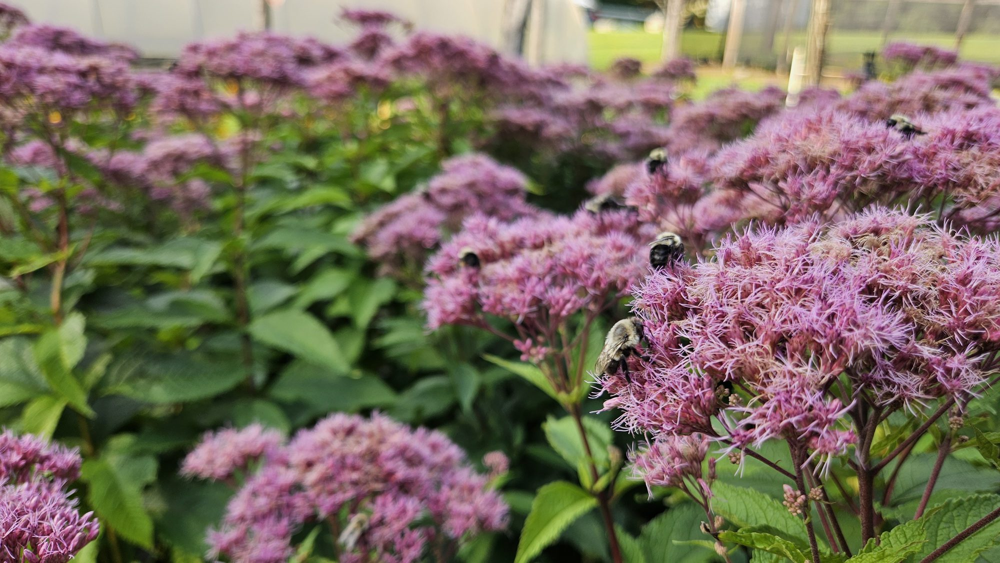
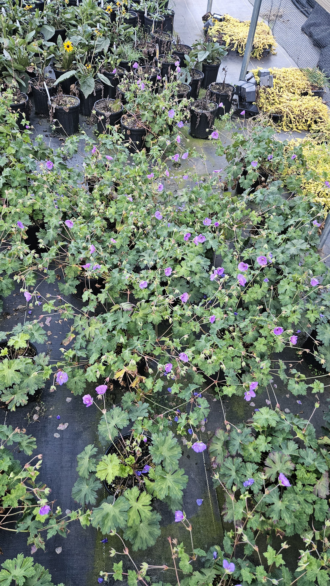
Reach out via Instagram for current availability — stock changes with the season.